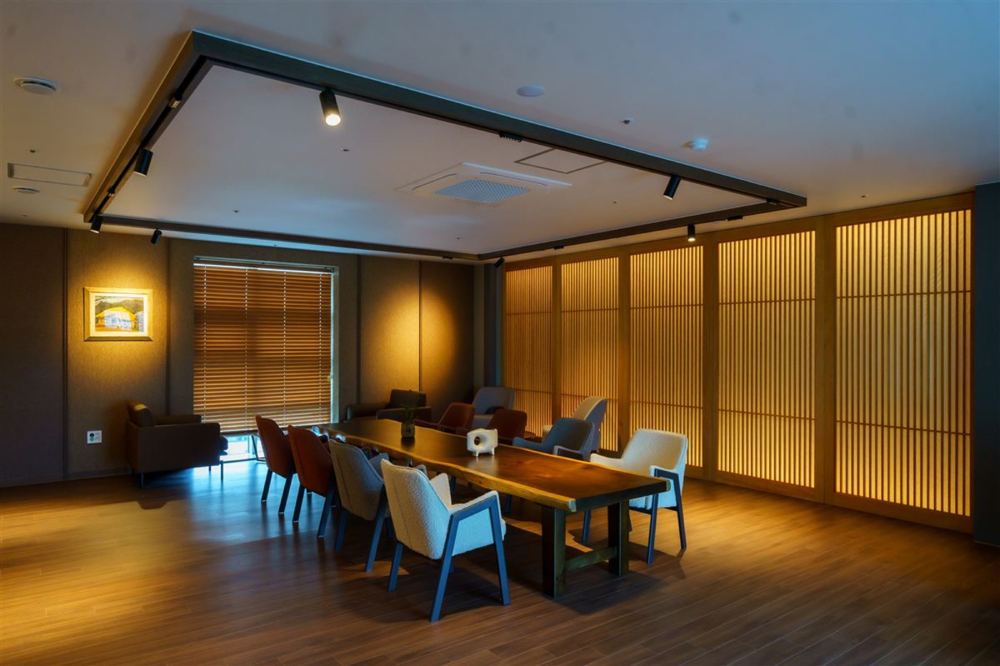
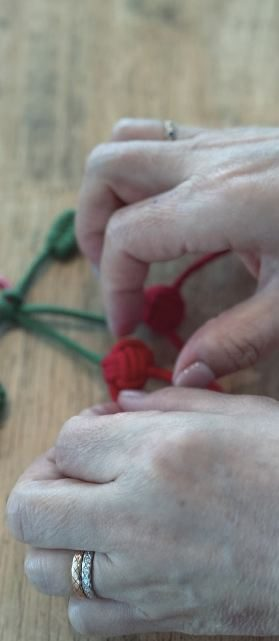
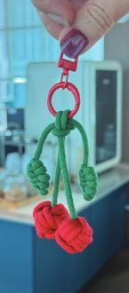
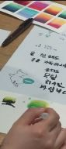
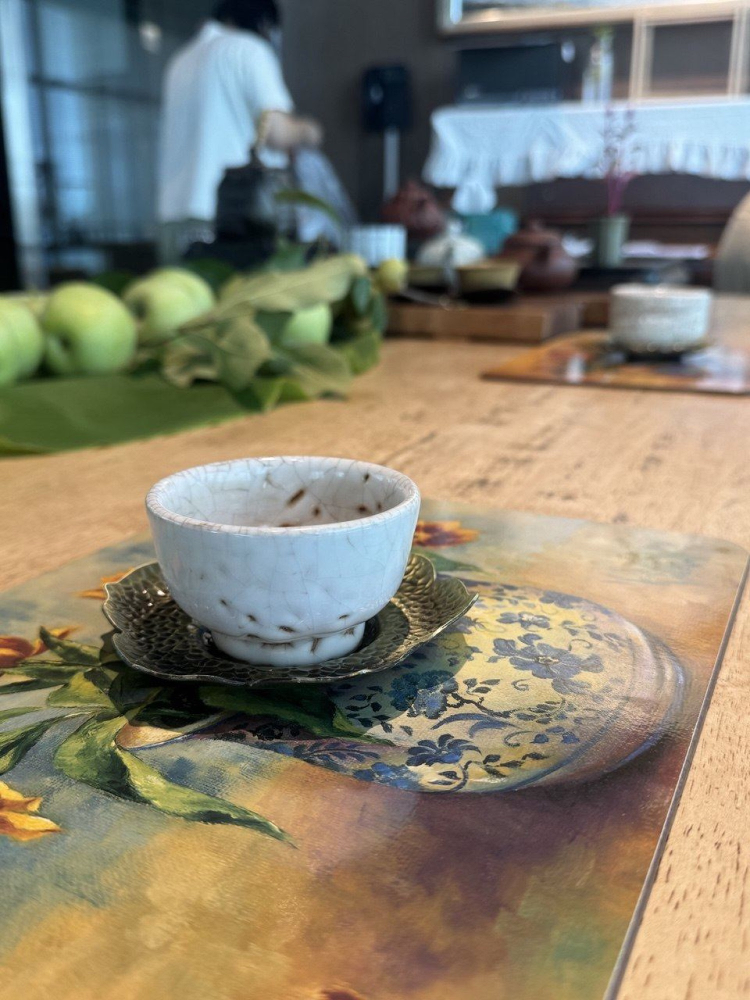
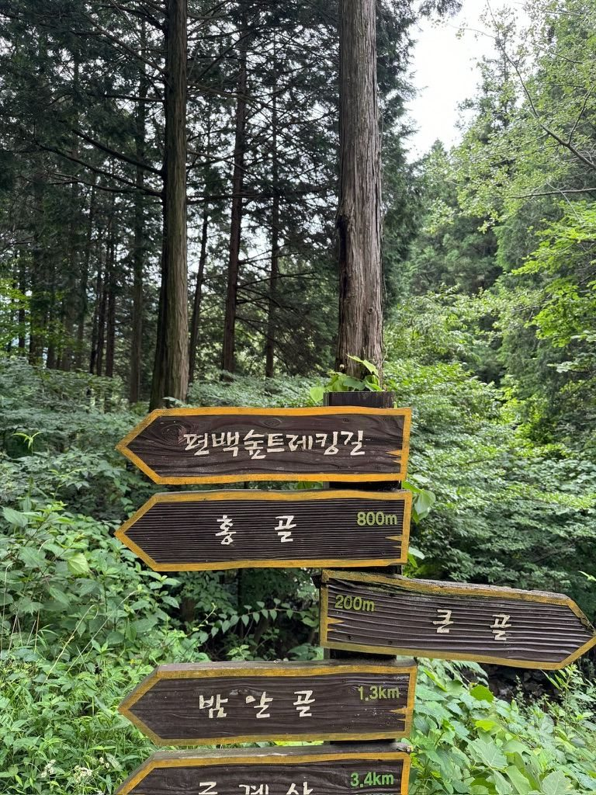
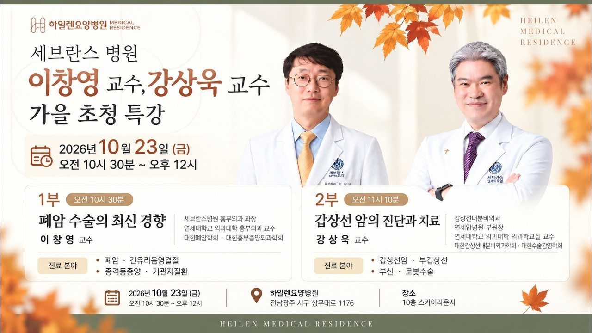
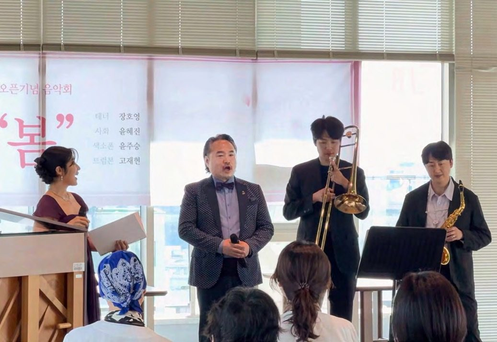
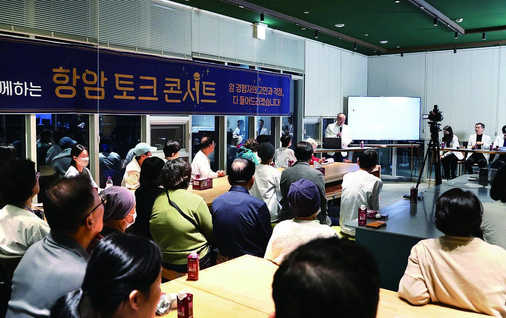
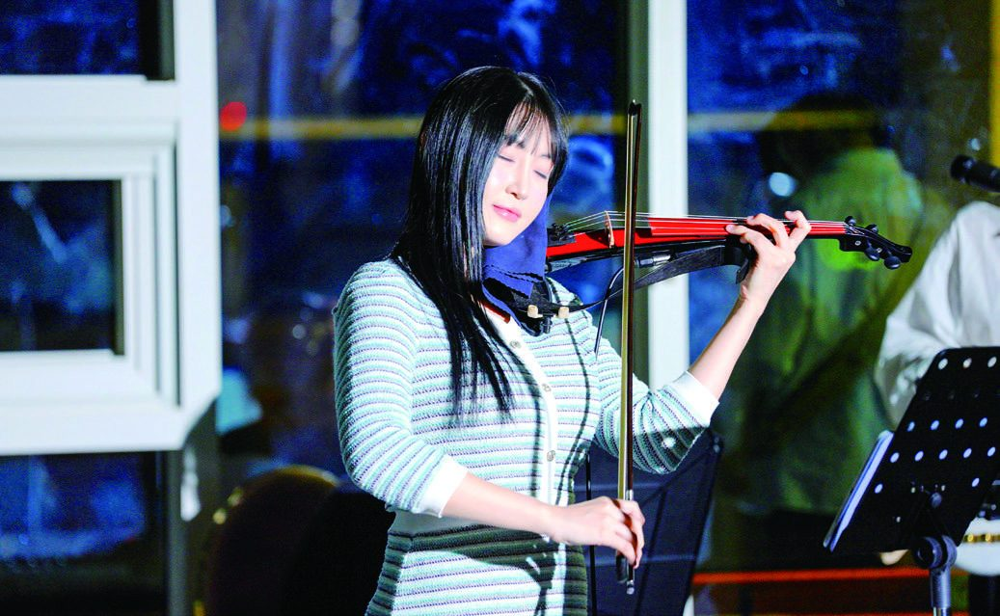

입원하지 않아도 프로그램에 참여할 수 있나요?
입원하지 않으셔도 외래 진료로 오셔서 참여하실 수 있습니다. 하일렌요양병원의 힐링 프로그램은 치료 기간 환자분에게 주어지는 스트레스 완화 및 우울한 마음 관리 등을 위해 시행되고 있습니다. 마음을 돌보는 명상·캘리그래피·공방·다도와 몸을 움직이는 요가·라인댄스·편백숲 트레킹이 있습니다. 암재활 운동치료는 프로그램이 아니라 주치의 처방으로 받는 치료입니다.

- 대상
- 입원·외래 환자분 모두
- 장소
- 암재활 운동치료·요가·라인댄스는 3층 재활치료실 · 뜨개공방·매듭공예·명상·암기공·주말영화는 10층 스카이라운지와 힐링프로그램실
- 시간대
- 뜨개공방·매듭공예는 낮 1시 30분 · 암재활 운동치료는 오후 2시 30분부터 한 시간 · 저녁 프로그램은 6시 30분과 6시 40분 · 주말영화는 낮 1시
- 요일·일자
- 월별 공지로 안내합니다. 이달의 요일표는 소식의 2026년 10월 프로그램 안내에 있습니다.
- 신청·문의
- 카카오톡 채널 · 병동 간호사실(입원) · 원내 상담실(외래) · 062-439-1000
일부 프로그램 설명에는 관련 연구와 진료 지침을 함께 적었습니다. 이는 연구가 살펴본 결과와 지침이 권고하는 내용입니다. 하일렌요양병원 프로그램의 효과를 약속하는 말은 아닙니다.
마음 돌봄 프로그램
명상·캘리그래피·공방·다도·암 공부·주말영화로 마음을 돌보는 시간입니다. 힐링 프로그램은 치료가 아니라 치료 기간의 일상을 함께 보내는 활동입니다. 걱정이나 불면처럼 치료가 필요한 증상은 주치의가 진료합니다.
명상
명상은 저녁 6시 30분에 10층 힐링프로그램실에서 김성훈 수석병원장이 직접 진행합니다.
국가암정보센터는 암 환자의 20~40%가 몸과 마음의 괴로움인 디스트레스를 겪는다고 합니다. 하일렌요양병원에서는 환자분의 감정 조절을 돕는 방법으로 명상을 시행합니다.

캘리그래피·뜨개공방·매듭공예
손끝에 집중하는 시간입니다.



뜨개공방과 매듭공예는 낮 1시 30분, 캘리그래피는 저녁 6시 30분에 10층 스카이라운지에서 열립니다.
차 다도·천연체험공방
차 다도와 천연체험공방도 10층 스카이라운지에서 열립니다. 다도는 강사와 함께 진행합니다. 매주 직접 차를 우리고, 색과 향, 맛을 음미하며 담소를 나눕니다. 찻물 빛깔을 바라보고 향을 맡으며 한 모금씩 천천히 마셔 봅니다. 천연체험공방에서는 천연화장품을 비롯해, 환경호르몬 문제가 생길 수 있는 세안제품과 향수까지 천연 재료로 직접 만들고 체험합니다.

암기공, 암을 이기는 공부
'암기공'은 암을 이기는 공부의 줄임말입니다. 진료실에서는 시간이 짧아 묻지 못했던 것들을 강의실에서 천천히 배웁니다. 김성훈 수석병원장과 장익완 병원장이 직접 강의하고, 강의가 끝나면 질문을 받습니다.
자율신경계와 면역, 스트레스와 면역, 운동과 면역, 하일렌요양병원의 전반적인 치료를 주제로 강의합니다. 환자분과 가족이 병과 치료를 바르게 이해하고, 치료를 마친 후에도 이어 갈 관리 계획을 스스로 세우실 수 있도록 돕습니다. 10층 힐링프로그램실에서 매달 열리는 배움의 시간에 편하게 와 주세요. 이달의 일자와 주제는 소식의 월별 프로그램 공지에 있습니다.
주말영화
주말영화는 토·일 낮 1시에 10층 힐링프로그램실에서 상영합니다.
몸 돌봄과 암재활 운동치료
몸을 움직이는 프로그램과 암재활 운동치료입니다.
암재활 운동치료는 치료입니다
자세 교정 및 근력 강화, 균형감 강화 및 제한된 관절 부위 스트레칭 운동으로 재활을 돕는 한 시간입니다.

암재활 운동치료는 힐링 프로그램과 별개로, 3층 재활치료실에서 하는 운동 치료입니다. 입원 환자분과 외래·단기입원 환자분 모두 받으실 수 있습니다. 오후 2시 30분부터 한 시간 동안 진행합니다. 퇴원 후 집에서도 하실 수 있는 동작입니다. 수술한 부위와 시기에 따라 피해야 할 동작을 정하고, 환자분의 상태에 따라 운동 범위 및 운동량을 결정합니다. 처음 오시는 분은 수술 부위와 수술 날짜만 말씀해 주시면 됩니다. 주치의와 함께 정한 범위 안에서 암재활 운동치료를 무리 없이 하실 수 있도록 돕습니다.
요가·라인댄스

요가는 저녁 6시 40분, 라인댄스는 저녁 6시 30분에 3층 재활치료실에서 진행합니다. 외래 환자분들도 저녁 시간에 참여하실 수 있습니다.
암 생존자에게 권하는 운동량은 일주일에 150분 이상 중간 강도로 몸을 움직이고, 일주일에 두 번 이상 근력 운동을 하는 것입니다(국가암정보센터). 다만 수술 직후나 치료 중에는 이 기준이 그대로 맞지 않을 수 있어, 어디까지 움직여도 되는지는 주치의와 상의해 주세요.
요가는 통합종양학회(SIO)·미국임상종양학회(ASCO) 지침(2023)에 유방암 환자의 불안과 우울 증상에 쓸 수 있는 방법으로 실려 있습니다.
신나는 음악에 맞춰 발걸음을 이어 가는 라인댄스는 즐겁게 할 수 있는 유산소 운동입니다. 박자를 다 따라가지 않아도 괜찮습니다. 옆 사람과 웃으며 이야기할 수 있을 만큼, 내 몸에 맞는 속도로 함께해 주세요.
뼈 전이가 있으시거나 피로와 어지럼이 심한 날에는 운동 프로그램에 참여하시기 전에 주치의에게 먼저 말씀해 주세요.
편백숲 트레킹
컨디션이 허락하는 날 함께 나서서, 기분을 바꾸고 몸을 가볍게 움직이는 걷기입니다.
병원 가까이에도 걷기 좋은 길이 있습니다. 길 건너 상록근린공원은 오래된 벚꽃 명소이고, 광주시립미술관 상록전시관·하정웅미술관과 이어진 트레킹 코스가 있습니다. 미술관 곁에는 어싱장과 산책로가 있고, 미술관 작품은 분기마다 바뀌어 걸을 때마다 새로운 작품을 만나실 수 있습니다. 병원 밖 다른 편백숲 트레킹 코스로도 함께 나섭니다.

참여를 원하시는 분들과 일정을 맞춰 진행하고, 그날의 몸 상태에 따라 걷는 속도와 거리를 조절합니다. 코스 난이도는 고르실 수 있습니다.
요일과 일자
요일과 일자는 달마다 바뀌고, 시간도 병원 사정에 따라 바뀔 수 있습니다. 여기에는 장소와 시간대만 적어 두었으니, 이달의 요일표는 소식의 2026년 10월 프로그램 안내에서 확인해 주세요.
예정 행사
- 예정된 행사는 소식에서 먼저 알려 드립니다.
지난 행사
원내에서 열린 특강과 콘서트를 사진과 함께 남겨 둡니다. 최근 행사가 위에 있습니다.




사진이 없는 행사
- 2025년 연세암병원 정민규 교수 특강 (표적·면역치료)
- 2023년 장익완 병원장 특강 「고주파온열암치료와 고용량비타민C」
참여 안내
상태에 따라 참여하실 수 있는 프로그램이 달라서, 참여 전에 담당 의료진과 상의해 주세요.
신청과 문의는 카카오톡 채널로 편하게 하실 수 있습니다. 카카오톡으로 프로그램 안내를 받으시고, 참가 신청을 접수하신 후 참여하시면 됩니다. 입원 중이시면 병동 간호사실에, 외래 진료로 오시면 원내 상담실에 말씀하셔도 됩니다.
프로그램 참여는 컨디션이 허락하는 날에 하시면 됩니다. 치료를 바꾸거나 받지 않겠다는 뜻을 말씀하시면 기록하고 존중합니다.
프로그램 예약은 카카오톡 채널에서, 입원·외래·단기입원 상담은 원내 상담실에서 도와 드립니다. 궁금한 점이 있으시면 언제든 편하게 물어보세요.
제공 하일렌요양병원 · 갱신 2026-10-23